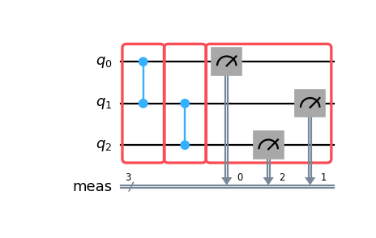

generate_boxing_pass_manager¶
- samplomatic.transpiler.generate_boxing_pass_manager(*, enable_gates: bool = True, enable_measures: bool = True, measure_annotations: Literal['twirl', 'change_basis', 'all'] = 'twirl', twirling_strategy: Literal['active', 'active_accum', 'active_circuit', 'all'] = 'active_circuit', twirling_group: Literal['pauli', 'balanced_pauli', 'local_c1', 'local_pauli'] = 'pauli', decomposition: Literal['rzsx', 'rzrx'] = 'rzsx', inject_noise_targets: Literal['none', 'gates', 'measures', 'all'] = 'none', inject_noise_strategy: Literal['no_modification', 'uniform_modification', 'individual_modification'] = 'no_modification', inject_noise_site: Literal['before', 'after'] = 'before', remove_barriers: Literal['immediately', 'finally', 'after_stratification', 'never', True, False] = 'after_stratification', add_tags: Literal['none', 'unique_box', 'unique_instance', 'noise_ref'] = 'none') PassManager[source]¶
Construct a pass manager to group the operations in a circuit into boxes.
This function can be used to construct a new
qiskit.transpiler.PassManagerthat puts the instructions of the circuit into annotated boxes.>>> from qiskit.circuit import QuantumCircuit >>> from samplomatic.transpiler import generate_boxing_pass_manager >>> >>> # Create a simple circuit to test with >>> circuit = QuantumCircuit(3) >>> circuit.cz(0, 1) >>> circuit.cz(1, 2) >>> circuit.measure_all() >>> >>> pm = generate_boxing_pass_manager() >>> >>> boxed_circuit = pm.run(circuit) >>> boxed_circuit.draw("mpl")

To group instructions into boxes, a pass manager returned by this function takes the following steps in order:
If
remove_barriersisTrue, it removes all the barriers in the input circuit using theqiskit.transpiler.passes.RemoveBarrierspass.If
enable_gatesisTrue, using theGroupGatesIntoBoxespass, it creates boxes containing two-qubit gates. The resulting boxes are twirl-annotated and left-dressed, and contain a single layer of two-qubit gates.If
enable_measuresisTrue, it uses theGroupMeasIntoBoxespass to group the measurements. All the resulting boxes are left dressed. Depending on the value ofmeasure_annotations, they own aTwirlannotation, aChangeBasisannotation, or both.It adds idling qubits to the boxes following the given
twirling_strategy.Using the
AddTerminalRightDressedBoxespass, it adds empty right-dressed boxes to ensure that the resulting pass manager can produce circuits that can be successfully turned into a template/samplex pair by thesamplomatic.build()function.It uses the
AbsorbSingleQubitGatespass to absorb any chains of single-qubit gates in the circuit into a box, left- or right-dressed, that immediately succeeds the chain. This will cause the gates to be folded into the dressing once the circuit is built.If
inject_noise_targetsis not'none', it uses theAddInjectNoisepass to replace boxes with new boxes that additionally have inject noiseInjectNoiseannotations.If
add_tagsis not'none', it uses theAddTagspass to add aTagannotation to every box.
Deprecated since version 0.14.0: Providing boolean values to the
remove_barriersargument ofgenerate_boxing_pass_manager()is deprecated as of samplomatic 0.14.0. It will be removed no earlier than 1 month after the release date. Instead, choose one of the string values.- Parameters:
enable_gates – Whether to collect single- and multi-qubit gates into boxes using the
GroupGatesIntoBoxespass.enable_measures – Whether to collect measurements into boxes using the
GroupMeasIntoBoxespass.measure_annotations –
The annotations placed on the measurement boxes by
GroupMeasIntoBoxeswhenenable_measuresisTrue. The supported values are:'twirl'for aTwirlannotation.'change_basis'for aChangeBasisannotation with modemeasure.'all'for bothTwirlandChangeBasisannotations.
twirling_strategy –
The strategy for whether and how twirling boxes are extended to include eligible idle qubits; the boxing pass manager begins by constructing twirling boxes that contain one layer of multi-qubit gates or measurements, preceded by all of the adjacent single-qubit gates, then, according to the value of this option, these boxes are extended to include idling qubits. The allowed values are:
'active': No idling qubits are added to the boxes, meaning that every box only twirls the qubits that are active within the box.'active_accum': Idling qubits are added so that each individual box twirls all qubits that have been acted on by some instruction in the circuit up to and including the box.'active_circuit': Idling qubits are added so that each individual box twirls all qubits acted on by any instruction in the circuit.'all': Idling qubits are added so that each individual box twirls all of the qubits in the circuit.
twirling_group –
The group to use for the twirling boxes.
'pauli'uses the Pauli group.'balanced_pauli'uses the Pauli group with a balanced distribution.'local_c1'uses the subgroup of single-qubit Cliffords that are conjugated to single-qubit Cliffords on any entangling gates in the box, and the Pauli group everywhere else.'local_pauli'uses the Pauli subgroup that commutes with an entangler for non-Clifford gates, and the Pauli group everywhere else.
decomposition –
The gate sequence into which single-qubit dressing gates are synthesized.
'rzsx'synthesizes single-qubit gates with rz-sx-rz-sx-rz.'rzrx'synthesizes single-qubit gates with rz-rx-rz.
inject_noise_targets –
The boxes to annotate with an
InjectNoiseannotation using theAddInjectNoisepass. The supported values are:'none'to avoid annotating boxes of any kind.'gates'to annotate all the twirled boxes that contain entanglers, such as those created by theGroupGatesIntoBoxespass, and avoid annotating all the other boxes.'measures'to annotate all the twirled boxes that own a classical register, such as those created by theGroupMeasIntoBoxespass, and avoid annotating all the other boxes.'all'to target all the twirl-annotated boxes that contain entanglers and/or own classical registers.
inject_noise_strategy –
The noise injection strategies supported by the
AddInjectNoisepass. The following options are supported. In all these options, by “equivalent boxes” we mean boxes that are equal up to single-qubit gates on the dressing side.'no_modification': All the equivalent boxes are assigned an inject noise annotation with the samerefand withmodifier_ref=''.'uniform_modification': All the equivalent boxes are assigned an inject noise annotation with the samerefand withmodifier_ref=ref.'individual_modification': All the equivalent boxes are assigned an inject noise annotation with the sameref. Every box is assigned a uniquemodifier_ref.
inject_noise_site –
The noise injection sites supported by the
AddInjectNoisepass. All possible string values are:'before'to inject noise before the hard content of the box.'after'to inject noise after the content of the box.
remove_barriers –
When to apply the
qiskit.transpiler.passes.RemoveBarrierspass. All possible string values are:'after_stratification'removes barriers, but only after entangler and measurement instructions have been boxed and extended withtwirling_strategy, and before single-qubit gates are boxed. This effectively allows barriers to be used as hints to choose the entangler and measurement content of boxes, while also letting single-qubit gates move freely past where there had been a barrier, allowing them be absorbed into adjacent boxes.'immediately'removes barriers before doing anything else, so that existing barriers effectively have no role in box grouping.'finally'removes barriers, but only as the very last step. This causes, for example, single-qubit gates that are trapped between barriers to not be placed into boxes.'never'causes barriers to never be removed.
Boolean values are deprecated such that
Truecorresponds to'immediately'andFalsecorresponds to'never'.add_tags –
Whether and how to add a
Tagannotation to every box using theAddTagspass. Boxes with pre-existingTagannotations are left unchanged. The supported values are:'none'to not add any tags.'unique_box': therefis a truncated hash of the box’s structural content (i.e. ignoring single-qubit gate, and seeBoxKey), so structurally equivalent boxes share the samerefacross circuits. Boxes with differentTwirlspecifications are treated as unique, but all other annotations are ignored when comparing boxes.'unique_instance': therefis an incrementing counter (t0,t1, …), so every box in a circuit gets a uniqueref. The counter resets on each call torun().'noise_ref': therefis taken from the box’sInjectNoiseannotation’sreffield joined by an underscore with itsmodifier_reffield when present. Boxes without anInjectNoiseannotation are skipped.``’noise_ref’: the ``refis taken from the box’sInjectNoiseannotation’sreffield. Boxes without anInjectNoiseannotation are skipped (noTagis added). Typically used together with a non-'none'inject_noise_targetsvalue.
- Returns:
A pass manager that groups operations into boxes.
- Raises:
TranspilerError – If the user selects a combination of inputs that is not supported.